This is a compendium of questions arisen on the use of the tidyterra package and the potential solutions to it (mostly related with the use of terra and ggplot2 at this stage). You can ask for help or search previous questions in the following links.
You can also ask in Stack
Overflow using the tag tidyterra.
- Issues: https://github.com/dieghernan/tidyterra/issues
- Discussions: https://github.com/dieghernan/tidyterra/discussions
NA values are shown in gray color
This is the default behavior produced by the ggplot2
package. tidyterra color scales (i.e.,
scale_fill_whitebox_c(), etc.), has by default the
parameter na.value set to "transparent", that
prevents NA values to be filled1.
library(terra)
library(tidyterra)
library(ggplot2)
# Get a raster data, out beloved volcano on hi-res
volcanotemp <- file.path(tempdir(), "volcano2hires.tif")
# Download example file
volcanourl <- paste0(
"https://github.com/dieghernan/tidyterra/blob/main/",
"data-raw/volcano2hires.tif?raw=true"
)
if (!file.exists(volcanotemp)) {
download.file(volcanourl, volcanotemp, mode = "wb")
}
r <- volcanotemp %>%
rast() %>%
filter(elevation > 80 & elevation < 180)
# Default
def <- ggplot() +
geom_spatraster(data = r)
def +
labs(
title = "Default on ggplot2",
subtitle = "NA values in grey"
)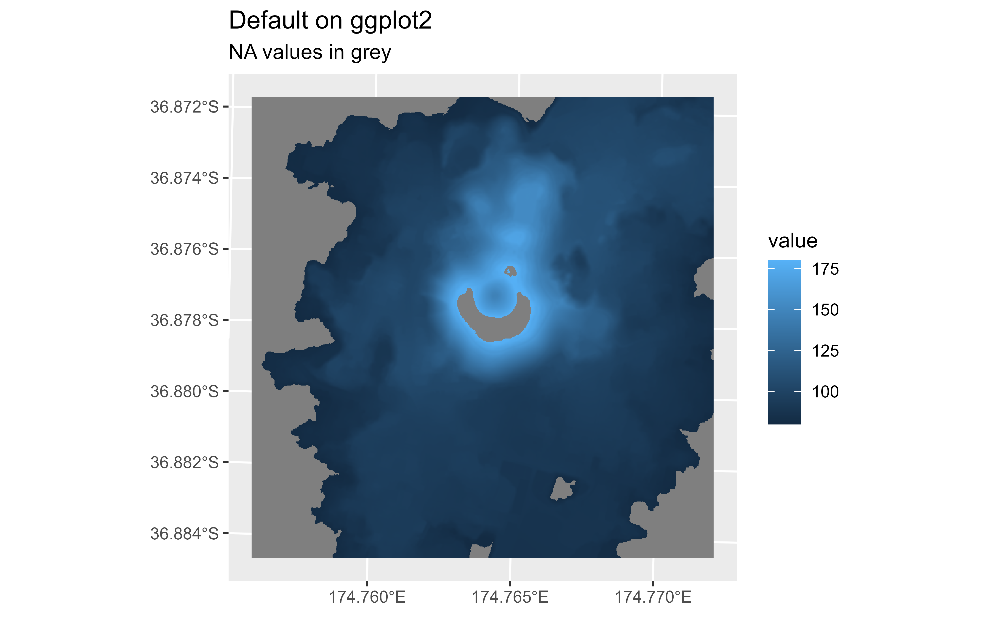
# Modify with scales
def +
scale_fill_continuous(na.value = "transparent") +
labs(
title = "Default colors on ggplot2",
subtitle = "But NAs are not plotted"
)
# Use a different scale provided by ggplot2
def +
scale_fill_viridis_c(na.value = "orange") +
labs(
title = "Use any fill_* scale of ggplot2",
subtitle = "Note that na.value = 'orange'"
)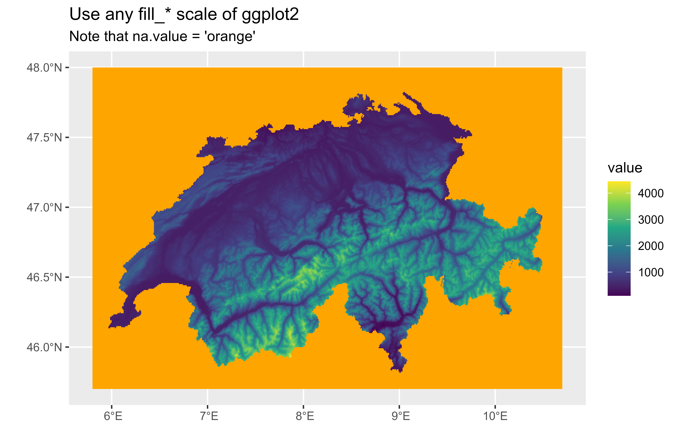
Labeling contours
Thanks to fortify.SpatRaster() you can use your
SpatRaster straight away with the metR package. Use the
parameter(s) bins/binwidth/breaks to align both labels and
lines:
library(terra)
library(tidyterra)
library(ggplot2)
library(metR)
volcanotemp <- file.path(tempdir(), "volcano2hires.tif")
# Download example file
volcanourl <- paste0(
"https://github.com/dieghernan/tidyterra/blob/main/",
"data-raw/volcano2hires.tif?raw=true"
)
if (!file.exists(volcanotemp)) {
download.file(volcanourl, volcanotemp, mode = "wb")
}
r <- rast(volcanotemp)
ggplot(r) +
geom_spatraster_contour(data = r) +
geom_text_contour(
aes(x, y, z = elevation),
check_overlap = TRUE,
stroke = 0.2,
stroke.colour = "white"
) +
labs(
title = "Labelling contours",
width = 2,
x = "", y = ""
)
# Modify number or bins
ggplot(r) +
geom_spatraster_contour(
data = r,
binwidth = 25
) +
geom_text_contour(
aes(x, y, z = elevation),
binwidth = 25,
check_overlap = TRUE,
stroke = 0.2, stroke.colour = "white"
) +
labs(
title = "Labelling contours",
subtitle = "Aligning breaks",
width = 2,
x = "", y = ""
)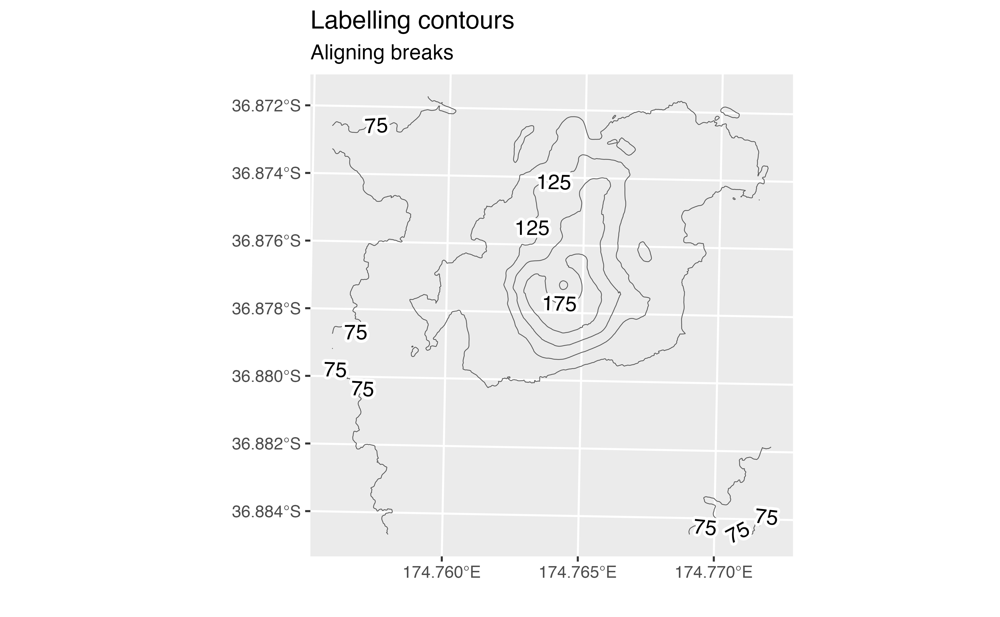
Using a different color scale
Since tidyterra leverages on ggplot2, please refer to ggplot2 use of scales:
library(terra)
library(tidyterra)
library(ggplot2)
volcanotemp <- file.path(tempdir(), "volcano2hires.tif")
# Download example file
volcanourl <- paste0(
"https://github.com/dieghernan/tidyterra/blob/main/",
"data-raw/volcano2hires.tif?raw=true"
)
if (!file.exists(volcanotemp)) {
download.file(volcanourl, volcanotemp, mode = "wb")
}
r <- rast(volcanotemp)
# Hillshade with grey colors
slope <- terrain(r, "slope", unit = "radians")
aspect <- terrain(r, "aspect", unit = "radians")
hill <- shade(slope, aspect, 10, 340)
ggplot() +
geom_spatraster(data = hill, show.legend = FALSE) +
# Note the scale, grey colours
scale_fill_gradientn(
colours = grey(0:100 / 100),
na.value = "transparent"
) +
labs(title = "A hillshade plot with grey colors")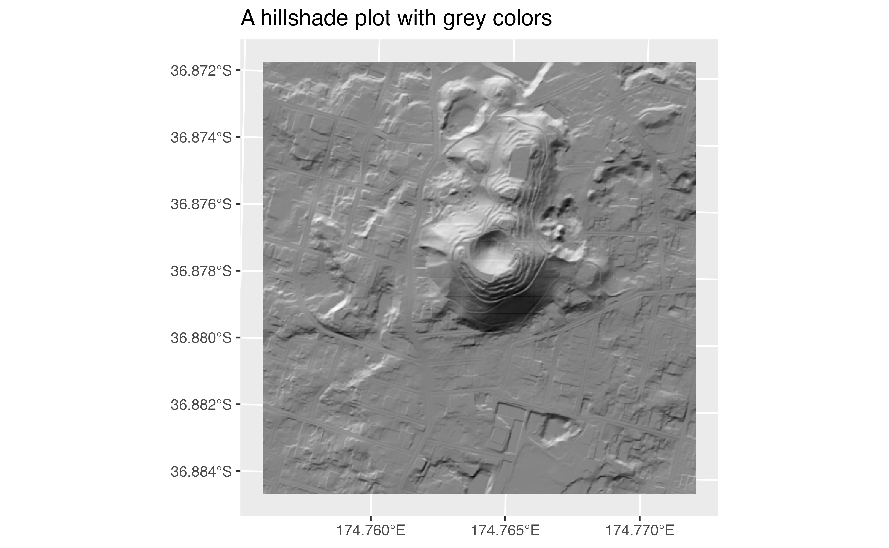
Can I change the default palette of my maps?
Yes, use options("ggplot2.continuous.fill") to modify
the default colors on your session.
library(terra)
library(tidyterra)
library(ggplot2)
volcanotemp <- file.path(tempdir(), "volcano2hires.tif")
# Download example file
volcanourl <- paste0(
"https://github.com/dieghernan/tidyterra/blob/main/",
"data-raw/volcano2hires.tif?raw=true"
)
if (!file.exists(volcanotemp)) {
download.file(volcanourl, volcanotemp, mode = "wb")
}
r <- rast(volcanotemp)
p <- ggplot() +
geom_spatraster(data = r)
# Set options
tmp <- getOption("ggplot2.continuous.fill") # store current setting
options(ggplot2.continuous.fill = scale_fill_terrain_c)
p
# restore previous setting
options(ggplot2.continuous.fill = tmp)
p
My map tiles are blurry
This is probably related with the tile itself rather than the
package. Most base tiles are provided in EPSG:3857, so
check first if your tile has this CRS and not a different one. Not
having EPSG:3857 may be an indication that the tile has
been reprojected, implied some sort of sampling that causes the
blurriness on your data. Also, modify the parameter maxcell
to avoid resampling and force the ggplot2 map to be on
EPSG:3857 with
ggplot2::coord_sf(crs = 3857):
library(terra)
library(tidyterra)
library(ggplot2)
library(sf)
library(maptiles)
# Get a tile from a point on sf format
p <- st_point(c(-97.09, 31.53)) %>%
st_sfc(crs = 4326) %>%
st_buffer(750)
tile1 <- get_tiles(p, provider = "OpenStreetMap", zoom = 14, cachedir = ".")
ggplot() +
geom_spatraster_rgb(data = tile1) +
geom_sf(data = p, fill = NA) +
labs(title = "This is a bit blurry...")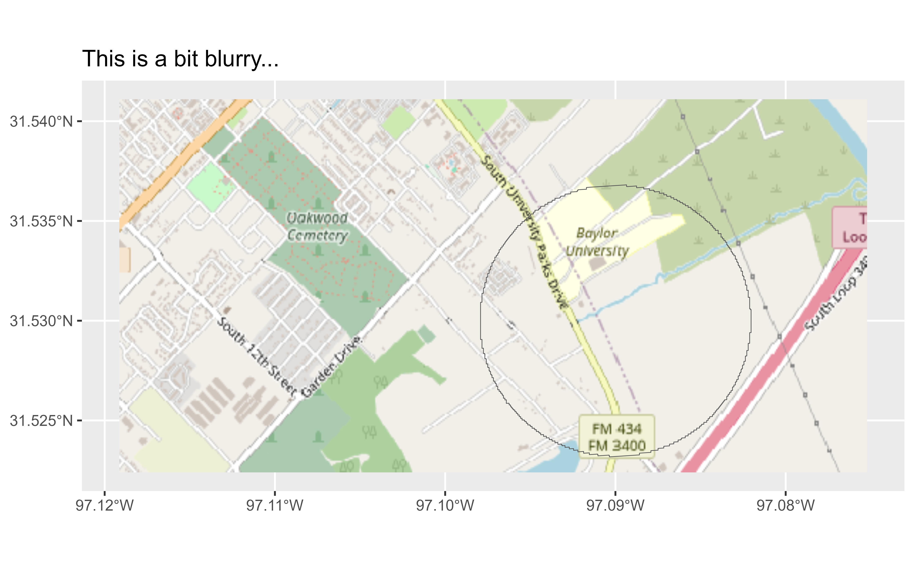
st_crs(tile1)$epsg
#> [1] 4326
# The tile was in EPSG 4326
# get tile in 3857
p2 <- st_transform(p, 3857)
tile2 <- get_tiles(p2, provider = "OpenStreetMap", zoom = 14, cachedir = ".")
st_crs(tile2)$epsg
#> [1] 3857
# Now the tile is EPSG:3857
ggplot() +
geom_spatraster_rgb(data = tile2, maxcell = Inf) +
geom_sf(data = p, fill = NA) +
# Force crs to be 3857
coord_sf(crs = 3857) +
labs(
title = "See the difference?",
subtitle = "Init crs=3857 and maxcell modified"
)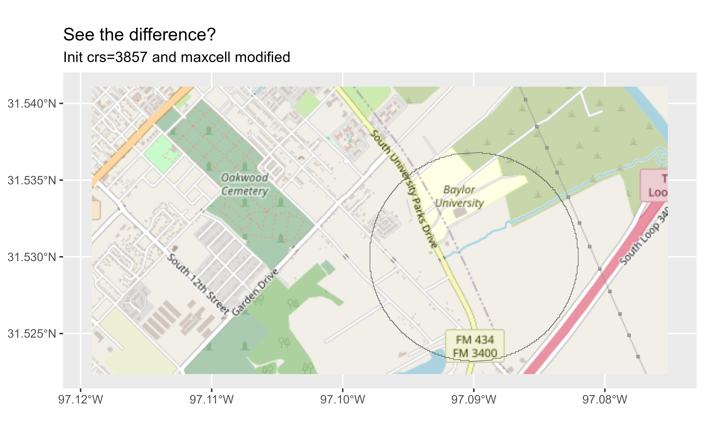
Avoid degrees labeling on axis
Again, this is the ggplot2 default, but can be
modified with ggplot2::coord_sf(datum) argument:
library(terra)
library(tidyterra)
library(ggplot2)
library(sf)
volcanotemp <- file.path(tempdir(), "volcano2hires.tif")
# Download example file
volcanourl <- paste0(
"https://github.com/dieghernan/tidyterra/blob/main/",
"data-raw/volcano2hires.tif?raw=true"
)
if (!file.exists(volcanotemp)) {
download.file(volcanourl, volcanotemp, mode = "wb")
}
r <- rast(volcanotemp)
ggplot() +
geom_spatraster(data = r) +
labs(
title = "Axis auto-converted to lon/lat",
subtitle = paste("But SpatRaster is EPSG:", st_crs(r)$epsg)
)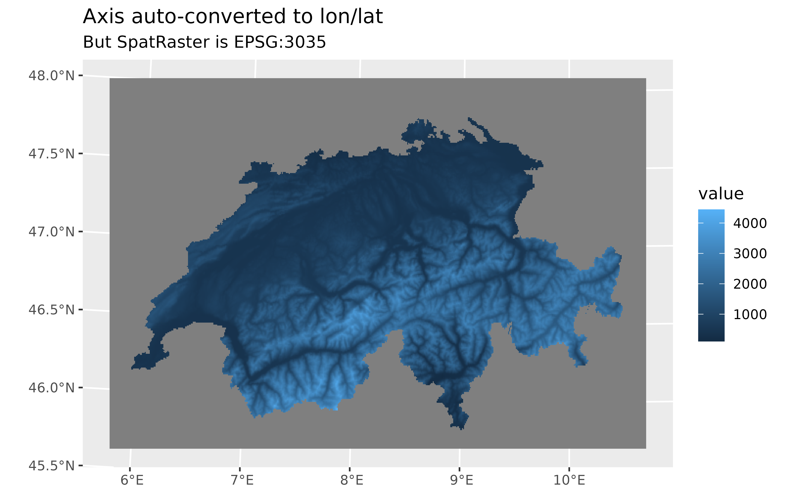
# Use datum
ggplot() +
geom_spatraster(data = r) +
coord_sf(datum = pull_crs(r)) +
labs(
title = "Axis on the units of the SpatRaster",
subtitle = paste("EPSG:", st_crs(r)$epsg)
)
Modifying the number of breaks on axis
The best option is to pass your custom breaks to
ggplot2::scale_x_continous() or
ggplot2::scale_y_continous(). You will need to provide the
breaks in lon/lat even if your data is projected. See also ggplot2/issues/4622:
library(terra)
library(tidyterra)
library(ggplot2)
library(sf)
volcanotemp <- file.path(tempdir(), "volcano2hires.tif")
# Download example file
volcanourl <- paste0(
"https://github.com/dieghernan/tidyterra/blob/main/",
"data-raw/volcano2hires.tif?raw=true"
)
if (!file.exists(volcanotemp)) {
download.file(volcanourl, volcanotemp, mode = "wb")
}
r <- rast(volcanotemp)
ggplot() +
geom_spatraster(data = r) +
labs(title = "Default axis breaks")
# Modify y breaks with extent projected in EPSG:4326
# Get extent
ext <- r %>%
project("EPSG:4326", mask = TRUE) %>%
ext() %>%
as.vector()
ggplot() +
geom_spatraster(data = r) +
scale_y_continuous(
expand = expansion(mult = 0.05),
breaks = scales::breaks_pretty(n = 3)(ext[c("ymin", "ymax")])
) +
labs(title = "Three breaks on y")
Plotting SpatRasters with color tables
tidyterra has several ways to handle these SpatRasters:
library(terra)
library(tidyterra)
library(ggplot2)
require(spDataLarge)
# Get a SpatRaster with coltab
r_coltab <- rast(system.file("raster/nlcd.tif", package = "spDataLarge"))
has.colors(r_coltab)
#> [1] TRUE
r_coltab
#> class : SpatRaster
#> dimensions : 1359, 1073, 1 (nrow, ncol, nlyr)
#> resolution : 31.5303, 31.52466 (x, y)
#> extent : 301903.3, 335735.4, 4111244, 4154086 (xmin, xmax, ymin, ymax)
#> coord. ref. : NAD83 / UTM zone 12N (EPSG:26912)
#> source : nlcd.tif
#> color table : 1
#> categories : levels
#> name : levels
#> min value : Water
#> max value : Wetlands
# Native handling by terra packages
plot(r_coltab)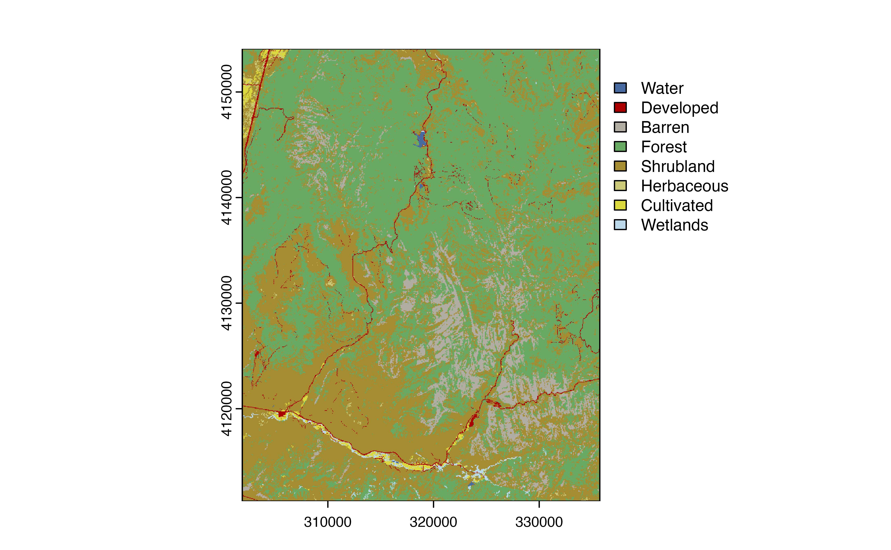

# B. geom_spatraster
ggplot() +
geom_spatraster(data = r_coltab, maxcell = Inf) +
ggtitle("geom_spatraster method")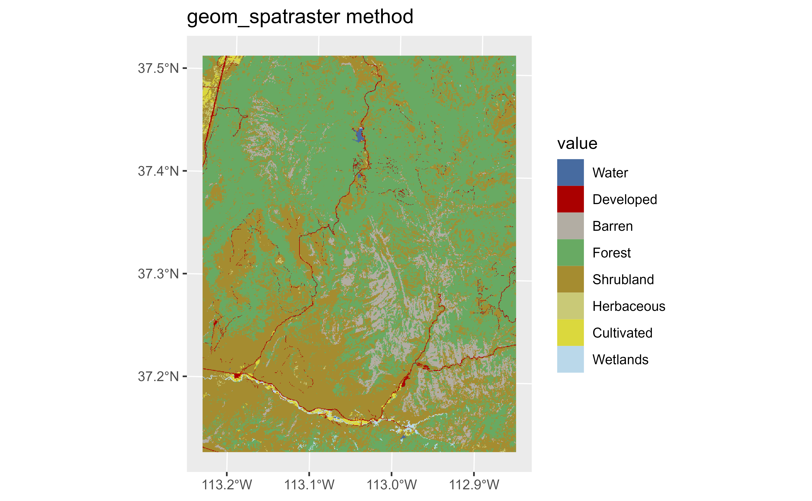
# C. Using scale_fill_coltab
g <- ggplot() +
geom_spatraster(data = r_coltab, use_coltab = FALSE, maxcell = Inf)
g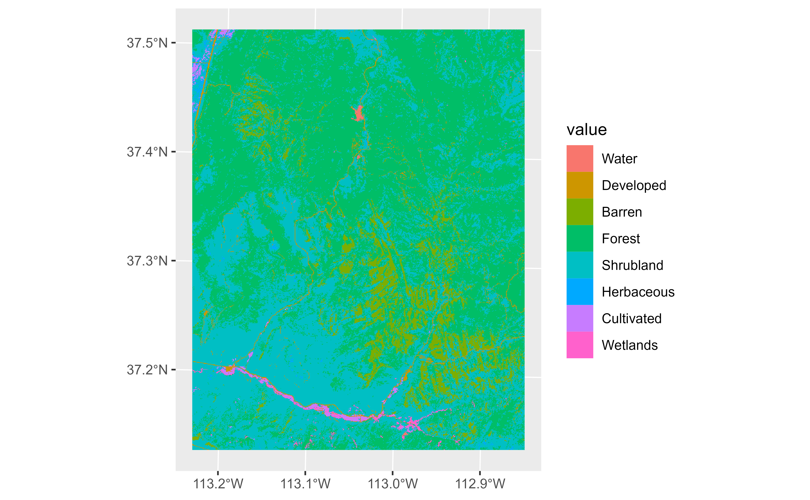
# But...
g +
scale_fill_coltab(data = r_coltab) +
ggtitle("scale_fill_coltab method")
# D. Extract named colors and scale_fill_manual
cols <- get_coltab_pal(r_coltab)
cols
#> <NA> Water Developed Barren Forest Shrubland Herbaceous
#> "#FFFFFF" "#476BA0" "#AA0000" "#B2ADA3" "#68AA63" "#A58C30" "#C9C977"
#> Cultivated Wetlands
#> "#DBD83D" "#BAD8EA"
scales::show_col(cols)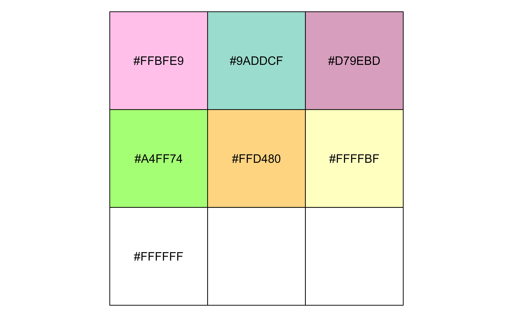
# And now
g +
scale_fill_manual(values = cols) +
ggtitle("scale_fill_manual method")North arrows and scale bar
tidyterra does not provide these graphical objects
for ggplot2 plots. However, you can use
ggspatial functions
(ggspatial::annotation_north_arrow() and
ggspatial::annotation_scale()):
library(terra)
library(tidyterra)
library(ggplot2)
library(ggspatial)
volcanotemp <- file.path(tempdir(), "volcano2hires.tif")
# Download example file
volcanourl <- paste0(
"https://github.com/dieghernan/tidyterra/blob/main/",
"data-raw/volcano2hires.tif?raw=true"
)
if (!file.exists(volcanotemp)) {
download.file(volcanourl, volcanotemp, mode = "wb")
}
r <- rast(volcanotemp)
autoplot(r) +
annotation_north_arrow(
which_north = TRUE,
pad_x = unit(0.8, "npc"),
pad_y = unit(0.75, "npc"),
style = north_arrow_fancy_orienteering()
) +
annotation_scale(
height = unit(0.015, "npc"),
width_hint = 0.5,
pad_x = unit(0.07, "npc"),
pad_y = unit(0.07, "npc"),
text_cex = .8
)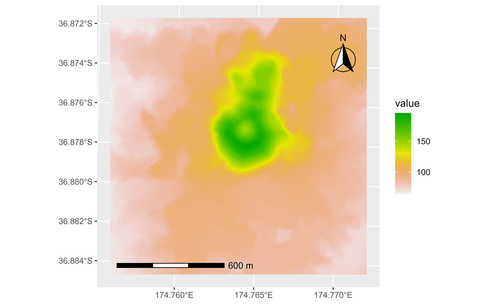
Session info
Details
#> ─ Session info ───────────────────────────────────────────────────────────────
#> setting value
#> version R version 4.3.2 (2023-10-31 ucrt)
#> os Windows Server 2022 x64 (build 20348)
#> system x86_64, mingw32
#> ui RTerm
#> language en
#> collate English_United States.utf8
#> ctype English_United States.utf8
#> tz UTC
#> date 2023-12-15
#> pandoc 2.19.2 @ C:/HOSTED~1/windows/pandoc/219~1.2/x64/PANDOC~1.2/ (via rmarkdown)
#>
#> ─ Packages ───────────────────────────────────────────────────────────────────
#> package * version date (UTC) lib source
#> backports 1.4.1 2021-12-13 [1] RSPM
#> bslib 0.6.1 2023-11-28 [1] RSPM
#> cachem 1.0.8 2023-05-01 [1] RSPM
#> checkmate 2.3.1 2023-12-04 [1] RSPM
#> class 7.3-22 2023-05-03 [3] CRAN (R 4.3.2)
#> classInt 0.4-10 2023-09-05 [1] RSPM
#> cli 3.6.2 2023-12-11 [1] RSPM
#> codetools 0.2-19 2023-02-01 [3] CRAN (R 4.3.2)
#> colorspace 2.1-0 2023-01-23 [1] RSPM
#> curl 5.2.0 2023-12-08 [1] RSPM
#> data.table 1.14.10 2023-12-08 [1] RSPM
#> DBI 1.1.3 2022-06-18 [1] RSPM
#> desc 1.4.3 2023-12-10 [1] RSPM
#> digest 0.6.33 2023-07-07 [1] RSPM
#> dplyr 1.1.4 2023-11-17 [1] RSPM
#> e1071 1.7-14 2023-12-06 [1] RSPM
#> evaluate 0.23 2023-11-01 [1] RSPM
#> fansi 1.0.6 2023-12-08 [1] RSPM
#> farver 2.1.1 2022-07-06 [1] RSPM
#> fastmap 1.1.1 2023-02-24 [1] RSPM
#> fs 1.6.3 2023-07-20 [1] RSPM
#> generics 0.1.3 2022-07-05 [1] RSPM
#> ggplot2 * 3.4.4 2023-10-12 [1] RSPM
#> ggspatial * 1.1.9 2023-08-17 [1] RSPM
#> glue 1.6.2 2022-02-24 [1] RSPM
#> gtable 0.3.4 2023-08-21 [1] RSPM
#> highr 0.10 2022-12-22 [1] RSPM
#> htmltools 0.5.7 2023-11-03 [1] RSPM
#> isoband 0.2.7 2022-12-20 [1] RSPM
#> jquerylib 0.1.4 2021-04-26 [1] RSPM
#> jsonlite 1.8.8 2023-12-04 [1] RSPM
#> KernSmooth 2.23-22 2023-07-10 [3] CRAN (R 4.3.2)
#> knitr 1.45 2023-10-30 [1] RSPM
#> labeling 0.4.3 2023-08-29 [1] RSPM
#> lifecycle 1.0.4 2023-11-07 [1] RSPM
#> magrittr 2.0.3 2022-03-30 [1] RSPM
#> maptiles * 0.6.1 2023-09-13 [1] RSPM
#> memoise 2.0.1 2021-11-26 [1] RSPM
#> metR * 0.14.1 2023-10-30 [1] RSPM
#> munsell 0.5.0 2018-06-12 [1] RSPM
#> pillar 1.9.0 2023-03-22 [1] RSPM
#> pkgconfig 2.0.3 2019-09-22 [1] RSPM
#> pkgdown 2.0.7 2022-12-14 [1] RSPM
#> plyr 1.8.9 2023-10-02 [1] RSPM
#> png 0.1-8 2022-11-29 [1] RSPM
#> proxy 0.4-27 2022-06-09 [1] RSPM
#> purrr 1.0.2 2023-08-10 [1] RSPM
#> R.cache 0.16.0 2022-07-21 [1] RSPM
#> R.methodsS3 1.8.2 2022-06-13 [1] RSPM
#> R.oo 1.25.0 2022-06-12 [1] RSPM
#> R.utils 2.12.3 2023-11-18 [1] RSPM
#> R6 2.5.1 2021-08-19 [1] RSPM
#> ragg 1.2.7 2023-12-11 [1] RSPM
#> Rcpp 1.0.11 2023-07-06 [1] RSPM
#> rlang 1.1.2 2023-11-04 [1] RSPM
#> rmarkdown 2.25 2023-09-18 [1] RSPM
#> s2 1.1.5 2023-12-10 [1] RSPM
#> sass 0.4.8 2023-12-06 [1] RSPM
#> scales 1.3.0 2023-11-28 [1] RSPM
#> sessioninfo * 1.2.2 2021-12-06 [1] any (@1.2.2)
#> sf * 1.0-14 2023-07-11 [1] RSPM
#> slippymath 0.3.1 2019-06-28 [1] RSPM
#> spDataLarge * 2.1.1 2023-12-15 [1] Github (Nowosad/spDataLarge@7222dad)
#> stringi 1.8.3 2023-12-11 [1] RSPM
#> stringr 1.5.1 2023-11-14 [1] RSPM
#> styler 1.10.2 2023-08-29 [1] RSPM
#> systemfonts 1.0.5 2023-10-09 [1] RSPM
#> terra * 1.7-55 2023-10-13 [1] RSPM
#> textshaping 0.3.7 2023-10-09 [1] RSPM
#> tibble 3.2.1 2023-03-20 [1] RSPM
#> tidyr 1.3.0 2023-01-24 [1] RSPM
#> tidyselect 1.2.0 2022-10-10 [1] RSPM
#> tidyterra * 0.5.0.9000 2023-12-15 [1] local
#> units 0.8-5 2023-11-28 [1] RSPM
#> utf8 1.2.4 2023-10-22 [1] RSPM
#> vctrs 0.6.5 2023-12-01 [1] RSPM
#> viridisLite 0.4.2 2023-05-02 [1] RSPM
#> withr 2.5.2 2023-10-30 [1] RSPM
#> wk 0.9.1 2023-11-29 [1] RSPM
#> xfun 0.41 2023-11-01 [1] RSPM
#> yaml 2.3.8 2023-12-11 [1] RSPM
#>
#> [1] D:/a/_temp/Library
#> [2] C:/R/site-library
#> [3] C:/R/library
#>
#> ──────────────────────────────────────────────────────────────────────────────